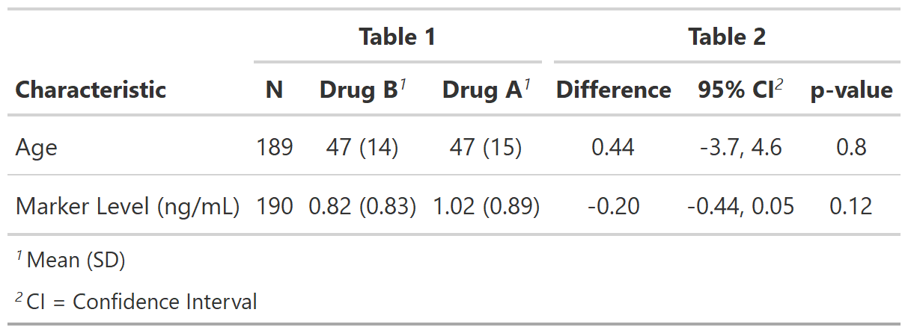

Returns an ANCOVA table showing the means of two groups and the difference in means
tbl_ancova( data, y, x, formula = "{y} ~ {x}", label = NULL, method.args = NULL, conf.level = 0.95, estimate_fun = NULL, pvalue_fun = NULL, method = stats::lm, digits = NULL )
| data | frame to be used in ANCOVA models |
|---|---|
| y | vector of continuous outcome variables. One-way ANOVA/ANCOVA models will be computed for each outcome. |
| x | string indicating the binary comparison variable |
| formula | String of the model formula.
Uses glue::glue syntax. Default is |
| label | List of formulas specifying variables labels,
e.g. |
| method.args | List of additional arguments passed on to the regression
function defined by |
| conf.level | Must be strictly greater than 0 and less than 1. Defaults to 0.95, which corresponds to a 95 percent confidence interval. |
| estimate_fun | Function to round and format coefficient estimates. Default is style_sigfig when the coefficients are not transformed, and style_ratio when the coefficients have been exponentiated. |
| pvalue_fun | Function to round and format p-values.
Default is style_pvalue.
The function must have a numeric vector input (the numeric, exact p-value),
and return a string that is the rounded/formatted p-value (e.g.
|
| method | Regression method (e.g. lm, glm, survival::coxph, and more). |
| digits | List of formulas specifying the number of decimal
places to round continuous summary statistics. If not specified,
|

Daniel D. Sjoberg